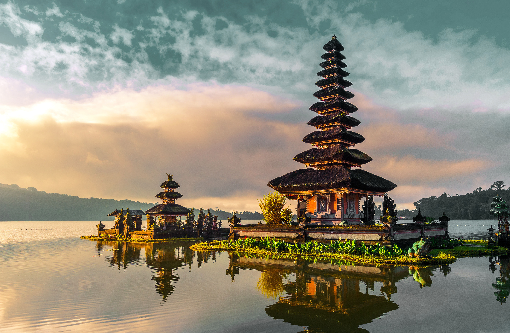
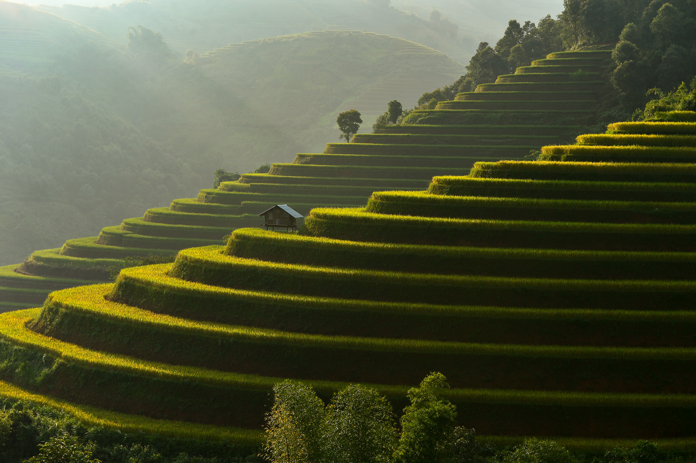

INDONESIA · ISLAND OF THE GODS
DISCOVER THE MAGIC OF
BALI.
Ancient temples, emerald jungles, volcanic horizons.
One island. A
thousand unforgettable stories.
SCROLL TO EXPLORE ↓
01 / CURATED PLACES
THE ISLAND CALLS.
From sacred mountain lakes to wild ocean cliffs. Find the side of Bali that stays with you.

02 / BEYOND THE POSTCARD
MORE THAN
A JOURNEY.
Wake up to misty mountain mornings. Wander through living traditions. Let the island set the pace.
SEE THE MOMENTS ↗03 / FIND YOUR WAY
EXPLORE BALI.
Select a marker to discover five unforgettable corners of the island.
04 / THROUGH THE LENS
ISLAND MOMENTS.
A glimpse of the colors, textures and quiet beauty that make Bali unforgettable. Tap to enlarge.